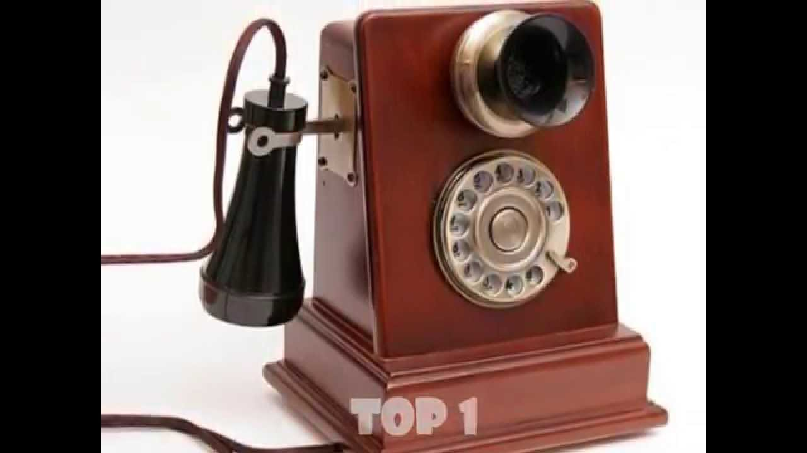
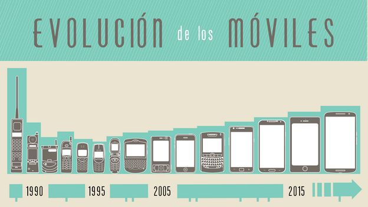
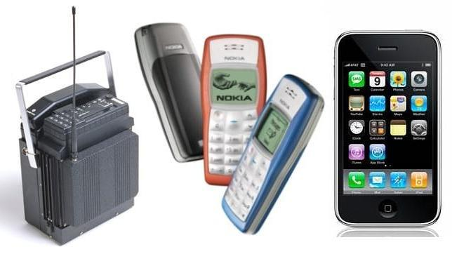
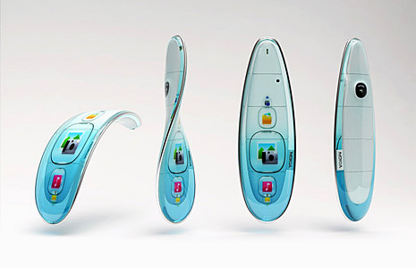
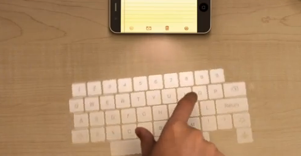

Un teléfono celular es un dispositivo inalámbrico electrónico que permite tener acceso a la red de telefonía celular o móvil. Se denomina celular debido a las antenas repetidoras que conforman la red, cada una de las cuales es una célula, si bien existen redes telefónicas móviles satelitales. Su principal característica es su portabilidad, que permite comunicarse desde casi cualquier lugar. Aunque su principal función es la comunicación de voz, como el teléfono convencional, su rápido desarrollo ha incorporado otras funciones como son cámara fotográfica, agenda, acceso a internet, reproducción de video e incluso GPS y reproductor mp3.
Estos son distintos ejemplos de celulares modernos
Telefonos antiguos
Estos son distintos ejemplos de telefonos antiguos

Aplicacion Uno, JEM
Historia de la telefonia Celular
El teléfono celular se remonta a los inicios de la Segunda Guerra Mundial, donde ya se veía que era necesaria la comunicación a distancia, es por eso que la compañía Motorola creó un equipo llamado Handie Talkie H12-16, que es un equipo que permite el contacto con las tropas vía ondas de radio que en ese tiempo no superaban más de 600 Khz.
En 1985 se comenzaron a perfeccionar y amoldar las características de este nuevo sistema revolucionario ya que permitía comunicarse a distancia. Fue así que en los años 1980 se llegó a crear un equipo que ocupaba recursos similares a los Handie Talkie pero que iba destinado a personas que por lo general eran grandes empresarios y debían estar comunicados, es ahí donde se crea el teléfono móvil y marca un hito en la historia de los componentes inalámbricos ya que con este equipo podría hablar a cualquier hora y en cualquier lugar.
Evolución del telefono

Telefonos antiguos y modernos

Aplicacion Uno, JEM
Clasificación de la telefonia celular
GAMA BAJA
Estos suelen ser pequeños, tienen funciones básicas o
las que traen ya no las trae
un smartphone autentico, sus precios son muy economicos, caracteristicas muy limitadas, no reciben soporte, ni
actualizaciones.
GAMA BAJA
GAMA MEDIA
los telefonos de gama media son aquellos que tienen pantallas de calidad, pero mas pequeñas, resolucion y profundidad de pixeles por pulgada, los procesadores no tiene la potencia de los procesadores que encontramos en gamas superiores y las camara fotográficas son de menos megapixeles.
GAMA MEDIA
GAMA ALTA
Los telefonos que pertenecen a esta gama suelen ser la ultima actualizacion de las compañias celulares y lo ultimo en tecnologia celular que podemos obtener.
GAMA ALTA
Aplicacion Uno, JEM
TELEFONOS CELULARES DEL FUTURO
Pantallas flexibles, transparentes o de papel, teléfonos armables y sistemas que permitan comunicarnos con los demás sin usar las redes telefónicas son cosas que convergerán en un futuro que cada vez se ve menos lejano.
Estos celulares tiene varias cualidades pero una a resaltar es que es capaz de proyectar una imagen de la pantalla y un teclado y con el tiempo, las novedades tecnológicas nos parecen normales y hasta aburridas.
Telefonos antiguos y modernos

Telefono con proyector

Aplicacion Uno, JEM
Compañías en mexico
TELCEL
es una marca propiedad de la empresa mexicana. Tiene presencia en todo México y se dedica a ofrecer servicios de telefonía móvil, telefonía fija, servicios de banda ancha, entre otros servicios.
TELCEL
MOVISTAR
conocida simplemente como Movistar, es el primer operador de telefonía fija, telefonía móvil, televisión por suscripción. Tiene su origen en la marca comercial con la que Telefónica Móviles comenzó a operar el servicio de telefonía móvil digital (GSM), el 25 de julio de 1995.
MOVISTAR
AT&T
(American Telephone and Telegraph) es una compañía estadounidense de telecomunicaciones.2 Provee servicios de voz, video, datos e Internet a negocios, clientes y agencias del gobierno. Durante su larga historia ha sido, en ocasiones, la compañía telefónica más grande del mundo y el operador de televisión por cable más grande de los Estados Unidos, llegando a ser clasificada como un monopolio
AT&T
UNEFÓN
es una compañía mexicana de telefonía móvil propiedad de AT&T, la cual se dedica a ofrecer únicamente el esquema de cobro de prepago. Fue fundada por Ricardo Salinas Pliego en 1998
UNEFÓN
IUSACELL
es una empresa mexicana de telecomunicaciones, subsidiaria de la empresa estadounidense AT&T, cuya sede se encuentra en la Ciudad de México. Entre sus principales servicios está la telefonía móvil, el internet móvil, servicios de banda ancha móvil, entre otros.